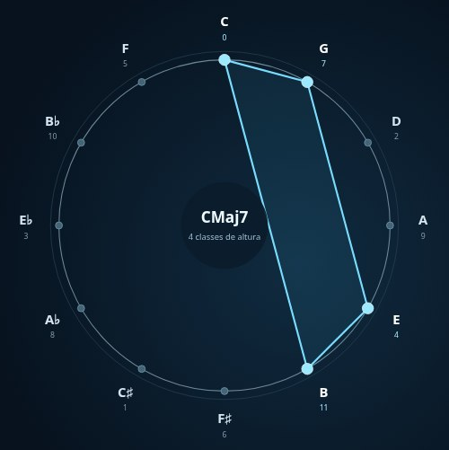
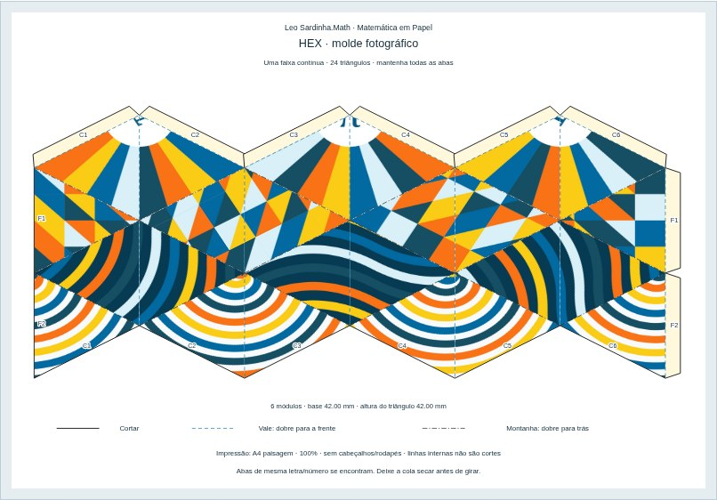
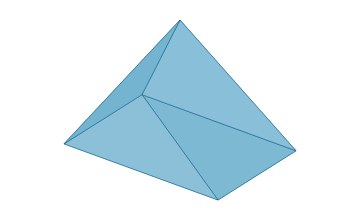

Matemática para explorar
Aprender também
pode ser jogo.
Jogos, música, histórias e construções. Conheça um pouco do que há por aqui e escolha sua próxima descoberta.
Para estudantes, professores e pessoas curiosas.

Música em Círculo
Quando acordes desenham polígonos.
Escolha uma descoberta
Um olhar sobre o que você encontra aqui
Abra uma área para conhecer suas atividades e materiais.
Jogos e investigações
Educação
Frações, números, coordenadas e desafios para aprender explorando.
Explorar esta área
Geometria para construir
Matemática em Papel
Origamis, quebra-cabeças e moldes que transformam uma folha em descoberta.
Explorar esta áreaLiteratura e raciocínio
Universo de Malba Tahan
Histórias e enigmas para imaginar, conversar e encontrar estratégias.
Explorar esta área
Medidas e modelagem
Matemática, 3D e Laser
Das medidas ao modelo: experiências com peças, impressão 3D e recorte a laser.
Explorar esta áreaProgramar e experimentar
Scratch e GeoGebra
Construções prontas e roteiros para investigar matemática com tecnologia.
Explorar esta áreaPlanejamento e sala de aula
Para professores
Propostas relacionadas à BNCC e materiais para preparar e adaptar aulas.
Explorar esta áreaUm espaço de encontro
Onde há pessoas conversando sobre matemática, há um ambiente matemático.
Perguntar, compartilhar estratégias e construir descobertas em conjunto: é dessa conversa que nasce este projeto.
Formulação autoral inspirada em Mateus 18:20.